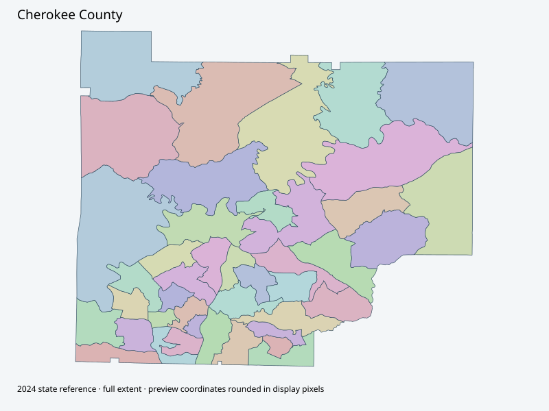

Map index · 42 explicit-FIPS 2024 map rows; 43 historical result identities. No approved crosswalk.

Full native coordinate/attribute extraction (gzip JSON) · Original complete statewide ZIP
Current GIS page links a43-page precinct map book (PDF metadata April9,2025; no extractable text), visually inspected. Separate older42-page2015 book retained as historical reference, never current approval.
Full objects, county source IDs/clocks and attributes: all 2,701 native contexts. isVirtual:false and source label precinct do not prove physical geometry.
| Source name | Full source GUID | Breakdown ordinal | Source | Map status |
|---|---|---|---|---|
| Air Acres | 01000000-d884-2e72-08c9-08dcda4b8d36 | 0 | 2024NovGen--cherokee-county-ga | unreviewed / no approved map join |
| Arnold Mill | 01000000-d884-2e72-4ed8-08dcda4b8d39 | 1 | 2024NovGen--cherokee-county-ga | unreviewed / no approved map join |
| Avery | 01000000-d884-2e72-90c0-08dcda4b8d3c | 2 | 2024NovGen--cherokee-county-ga | unreviewed / no approved map join |
| Ball Ground | 01000000-d884-2e72-d10b-08dcda4b8d3f | 3 | 2024NovGen--cherokee-county-ga | unreviewed / no approved map join |
| Bascomb | 01000000-d884-2e72-213c-08dcda4b8d43 | 4 | 2024NovGen--cherokee-county-ga | unreviewed / no approved map join |
| Clark Creek | 01000000-d884-2e72-4429-08dcda4b8d46 | 5 | 2024NovGen--cherokee-county-ga | unreviewed / no approved map join |
| Booth | 01000000-d884-2e72-0c9e-08dcda4b8d4a | 6 | 2024NovGen--cherokee-county-ga | unreviewed / no approved map join |
| Bradshaw | 01000000-d884-2e72-9c30-08dcda4b8d4e | 7 | 2024NovGen--cherokee-county-ga | unreviewed / no approved map join |
| Bridgemill | 01000000-d884-2e72-3659-08dcda4b8d52 | 8 | 2024NovGen--cherokee-county-ga | unreviewed / no approved map join |
| Hickory Log | 01000000-d884-2e72-8929-08dcda4b8d55 | 9 | 2024NovGen--cherokee-county-ga | unreviewed / no approved map join |
| Carmel | 01000000-d884-2e72-b516-08dcda4b8d58 | 10 | 2024NovGen--cherokee-county-ga | unreviewed / no approved map join |
| Woodstock | 01000000-d884-2e72-c570-08dcda4b8d5b | 11 | 2024NovGen--cherokee-county-ga | unreviewed / no approved map join |
| Airport | 01000000-d884-2e72-eabf-08dcda4b8d5e | 12 | 2024NovGen--cherokee-county-ga | unreviewed / no approved map join |
| Conns Creek | 01000000-d884-2e72-1705-08dcda4b8d62 | 13 | 2024NovGen--cherokee-county-ga | unreviewed / no approved map join |
| Deer Run | 01000000-d884-2e72-2ed1-08dcda4b8d65 | 14 | 2024NovGen--cherokee-county-ga | unreviewed / no approved map join |
| Dixie | 01000000-d884-2e72-c9e2-08dcda4b8d69 | 15 | 2024NovGen--cherokee-county-ga | unreviewed / no approved map join |
| Free Home | 01000000-d884-2e72-2e41-08dcda4b8d6d | 16 | 2024NovGen--cherokee-county-ga | unreviewed / no approved map join |
| Hickory Flat | 01000000-d884-2e72-fff6-08dcda4b8d70 | 17 | 2024NovGen--cherokee-county-ga | unreviewed / no approved map join |
| Hightower | 01000000-d884-2e72-84e6-08dcda4b8d74 | 18 | 2024NovGen--cherokee-county-ga | unreviewed / no approved map join |
| Hillside | 01000000-d884-2e72-b190-08dcda4b8d77 | 19 | 2024NovGen--cherokee-county-ga | unreviewed / no approved map join |
| Holly Springs | 01000000-d884-2e72-d818-08dcda4b8d7a | 20 | 2024NovGen--cherokee-county-ga | unreviewed / no approved map join |
| Bells | 01000000-d884-2e72-ee19-08dcda4b8d7d | 21 | 2024NovGen--cherokee-county-ga | unreviewed / no approved map join |
| Liberty | 01000000-d884-2e72-042c-08dcda4b8d81 | 22 | 2024NovGen--cherokee-county-ga | unreviewed / no approved map join |
| Little River | 01000000-d884-2e72-0ce3-08dcda4b8d84 | 23 | 2024NovGen--cherokee-county-ga | unreviewed / no approved map join |
| Macedonia | 01000000-d884-2e72-9b84-08dcda4b8d87 | 24 | 2024NovGen--cherokee-county-ga | unreviewed / no approved map join |
| Mountain Road | 01000000-d884-2e72-fafa-08dcda4b8d8a | 25 | 2024NovGen--cherokee-county-ga | unreviewed / no approved map join |
| Oak Grove | 01000000-d884-2e72-0ab5-08dcda4b8d8e | 26 | 2024NovGen--cherokee-county-ga | unreviewed / no approved map join |
| R M Moore | 01000000-d884-2e72-14f7-08dcda4b8d91 | 27 | 2024NovGen--cherokee-county-ga | unreviewed / no approved map join |
| Canton | 01000000-d884-2e72-1f02-08dcda4b8d94 | 28 | 2024NovGen--cherokee-county-ga | unreviewed / no approved map join |
| Rosecreek | 01000000-d884-2e72-97e9-08dcda4b8d97 | 29 | 2024NovGen--cherokee-county-ga | unreviewed / no approved map join |
| Salacoa | 01000000-d884-2e72-d383-08dcda4b8d9a | 30 | 2024NovGen--cherokee-county-ga | unreviewed / no approved map join |
| Sixes | 01000000-d884-2e72-e4db-08dcda4b8d9d | 31 | 2024NovGen--cherokee-county-ga | unreviewed / no approved map join |
| Sutallee | 01000000-d884-2e72-0737-08dcda4b8da1 | 32 | 2024NovGen--cherokee-county-ga | unreviewed / no approved map join |
| River Green | 01000000-d884-2e72-2c9b-08dcda4b8da4 | 33 | 2024NovGen--cherokee-county-ga | unreviewed / no approved map join |
| Toonigh | 01000000-d884-2e72-231d-08dcda4b8da8 | 34 | 2024NovGen--cherokee-county-ga | unreviewed / no approved map join |
| Union Hill | 01000000-d884-2e72-a48b-08dcda4b8dab | 35 | 2024NovGen--cherokee-county-ga | unreviewed / no approved map join |
| Univeter | 01000000-d884-2e72-f447-08dcda4b8dae | 36 | 2024NovGen--cherokee-county-ga | unreviewed / no approved map join |
| Victoria | 01000000-d884-2e72-79eb-08dcda4b8db3 | 37 | 2024NovGen--cherokee-county-ga | unreviewed / no approved map join |
| Waleska | 01000000-d884-2e72-00dc-08dcda4b8db7 | 38 | 2024NovGen--cherokee-county-ga | unreviewed / no approved map join |
| 269-Waleska | 01000000-d884-2e72-cf51-08dcda4b8dba | 39 | 2024NovGen--cherokee-county-ga | unreviewed / no approved map join |
| Wildcat | 01000000-d884-2e72-3b3a-08dcda4b8dbe | 40 | 2024NovGen--cherokee-county-ga | unreviewed / no approved map join |
| Woodlands | 01000000-d884-2e72-a1c2-08dcda4b8dc1 | 41 | 2024NovGen--cherokee-county-ga | unreviewed / no approved map join |
| Lickskillet | 01000000-d884-2e72-2021-08dcda4b8dc5 | 42 | 2024NovGen--cherokee-county-ga | unreviewed / no approved map join |
| Original row ordinal | DISTRICT | PRECINCT_I | PRECINCT_N |
|---|---|---|---|
| 1221 | 0576 | 6 | CLARK CREEK |
| 1222 | 05729 | 29 | OAK GROVE |
| 1223 | 05723 | 23 | BELLS |
| 1224 | 05740 | 40 | VICTORIA |
| 1225 | 05711 | 11 | CARMEL |
| 1226 | 05716 | 16 | DIXIE |
| 1227 | 05732 | 32 | ROSECREEK |
| 1228 | 05721 | 21 | HILLSIDE |
| 1229 | 0577 | 7 | BOOTH |
| 1230 | 0575 | 5 | BASCOMB |
| 1231 | 05734 | 34 | SIXES |
| 1232 | 0579 | 9 | BRIDGEMILL |
| 1233 | 05735 | 35 | SUTALLEE |
| 1234 | 05741 | 41 | WALESKA |
| 1235 | 05712 | 12 | WOODSTOCK |
| 1236 | 05715 | 15 | DEER RUN |
| 1237 | 05744 | 44 | LICKSKILLET |
| 1238 | 05737 | 37 | TOONIGH |
| 1239 | 05724 | 24 | LIBERTY |
| 1240 | 05722 | 22 | HOLLY SPRINGS |
| 1241 | 05742 | 42 | WILDCAT |
| 1242 | 05743 | 43 | WOODLANDS |
| 1243 | 05726 | 26 | LITTLE RIVER |
| 1244 | 0571 | 1 | AIR ACRES |
| 1246 | 0572 | 2 | ARNOLD MILL |
| 1247 | 0578 | 8 | BRADSHAW |
| 1248 | 05719 | 19 | HICKORY FLAT |
| 1249 | 05736 | 36 | RIVER GREEN |
| 1250 | 05710 | 10 | HICKORY LOG |
| 1251 | 05730 | 30 | R M MOORE |
| 1252 | 05731 | 31 | CANTON |
| 1253 | 05739 | 39 | UNIVETER |
| 1254 | 05713 | 13 | AIRPORT |
| 1255 | 05733 | 33 | SALACOA |
| 2053 | 05728 | 28 | MOUNTAIN ROAD |
| 2058 | 0573 | 3 | AVERY |
| 2069 | 05738 | 38 | UNION HILL |
| 2072 | 05727 | 27 | MACEDONIA |
| 2073 | 0574 | 4 | BALL GROUND |
| 2074 | 05720 | 20 | HIGHTOWER |
| 2075 | 05718 | 18 | FREE HOME |
| 2164 | 05714 | 14 | CONNS CREEK |